| Match Report - 14 May 2011 |
|
|
|
|
|
|
|
|
U6 Green
8 - 2
|
|
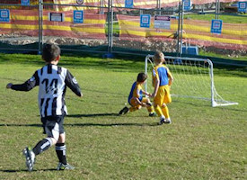
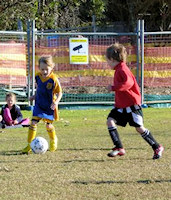
How nice to start the day at Magdala home ground for an 8:30am game. We were 2
players down this week which meant there were no reserves for the U6 Green and
in there true spirit they rose to the challenge with sheer delight that no one
had to take a turn on the sideline.
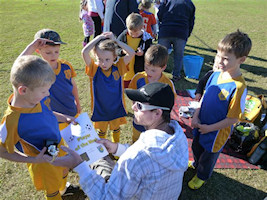
The Game started and within minutes Blake had secured the first goal and the
team and spectators were suddenly not as cold from the jumping up and down in
excitement.
The goals kept coming and all the players were showing there foot skills,
passing, trapping and special mention goes to Will for his control of the ball
both in attack and defence. Will took an almightily slide and his bleeding knee
did not stop him from supporting his team mates and scoring a great goal (see
photo).
The final tally Jasmine 3 goals, Blake 3 goals, Will & Christian a goal a piece.
Player of the week this week went to Blake for an all round great game.
- Sarah Robson
|
|
|
|
U6 Purple A
2 - 4
|
|
A crisp sunny morning, damp pitch and planes heading in to land at Mascot
greeted the boys for their home match against Northern HFC at Magdala.
With Lachlan back from illness we were brimming with confidence as Luke
made a break down the left wing to score the first goal of the match.
A collision not long after resulted in a couple of injuries that would test
the depth of the reserves bench.
Northern HFC were formidable opponents. The boys show great resilience with
Cameron working tirelessly to turn defence into offence.
Liam was solid all game, and Alex managed a great cross to score another goal
in the second half.
Cameron’s defensive efforts earned him the player of the match award for this
week.
- Gavin Lochrin
|
|
|
|
U6 Purple B
6 - 4
|
|
We had a fresh early start to the morning at Morrison Bay. Our training is
looking like it is sinking in. We were attacking the ball more and defending
well.
We were down at half time 4-2 but after some apples and oranges we were in
fighting spirits, and managed to score 4 goals in the second half.
A good game played by all, encouragement award to Georgia for attacking, and
player of the match to Alexis for her tackling and positioning.
- Meryl
|
|
|
|
U6 Red A
5 - 1
|
|
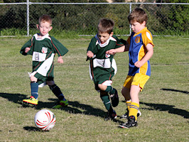
The boys were 1 short this week and were missing one of their key players but
that did not stop them getting a big win for their first win of the season.
Player of the Week, Oliver scored his first goal ever and went on to score
another 4 just in case anyone missed it.
The boys had a lot of fun while Ryde Saints turned on each other in frustration.
They are getting much more awareness about defending and clearing the ball away
from their goal. The team is improving really well together.
- Garry Allwood
|
|
|
|
U6 White C
0 - 5
|
|
On a brisk Autumn morning at Holy Cross the boys played against Holy Cross B and
lost 5-0. Jack, Will, Ryan, Kurt, Dylan and Max played well and are starting to
come together as a team.
Dylan was player of the match!
- Lisa Mach
|
|
|
|
U7 Green
1 - 4
|
|
Fontenoy Oval played host to our 5 round encounter with the Macquarie Dragons.
The game started with both teams pressing and battling for ball control, but it
was the Dragons to score first when a kick got through our defence. With a lot
of luck the Dragons scored again.
Luke had a number of great shot at the goals which just missed the net, Jayden
once again defended extremely well and saved many opportunities, whilst Alex,
Will, Lucas, Bailey and Dillan all pressured the Dragons defence.
With the team desperate for points we found ourselves out of position and the
Dragons scored a soft goal where being in position would have stopped them scoring.
At half time down 3 goals we had to come out and we needed to keep the ball and
most importantly score some goals. Our top goal scorer for the year Alex (who’s
scored an amazing 5 goals) scored our first goal. We continued to have shots and
Luke helped out with a wonderfully controlled header, just before the final
whistle the Dragons scored again. Even though the score was 1-4 this game could
have very easily gone our way, hold you head up high boys the win is coming.
Player of the match - Luke (for some great shots at goals and a well controlled
header)
- Joel
|
|
|
|
U7 White A
8 - 2
|
|
What a fantastic team of kids we have. A rare but beautiful sight, every weekend
to see a whole team of happy children run onto the field.
This week, on such a freezing cold morning I thought our team might have a fight
on their hands with the opposition warming up for a good half hour before the
game. But North Ryde showed what they were made of right up until the final
whistle and the score showed this. The goals were shared around with Hayden,
Emily and Cameron all scoring 2 each, Matthew scored his first goal of the season
(it was only a matter or time!) and Josh scoring 1 as well.
North Ryde are looking more like a team and less like individual players with a
lot of passing and looking for team mates. Special mention goes to the Duffy kids
today with all of them now showing the impressive kick back skill which has saved
many goals. But today the player of the match went to Hayden who was involved in
everything, great defence, attack and teamwork plus he has now scored a total of
8 goals for his team.
- Kirrilee
|
|
|
|
U7 White C
8 - 0
|
|
Saturday's game was a great win for our boys. Even with loads of cuddles and
rumbling going on within our team the boys still managed to score the goals and
win. Jack dominated the goal scoring but the highlight was when Ryan scored his
first goal of the season and his proud as punch reaction after...
Great job from all of you boys! Well done!
- Tanya
|
|
|
|
U8 Brown
1 - 5
|
|
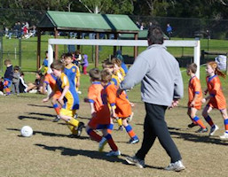
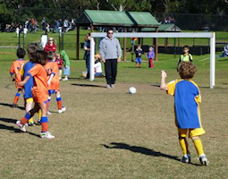
We had the home ground advantage this week and the sun was shining. The game
started with a lot of enthusiasm and Brooklyn secured a goal within the first
10 minutes of the game.
The All Saints team were very strong in their positioning and able to find free
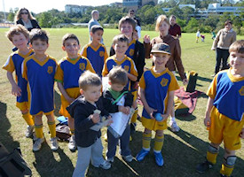
space for the throw ins and passes which assisted them in scoring 4 goals before
half time.
A special mention goes to Isaak and Liam for their strong support in the defence
throughout the game they supported both Oliver and Declan when they were in the
goals. After the half time break the team regrouped and played a lot more
attacking half and they were unlucky not to break through the All Saints goal.
The U8 Brown teams positioning and passing improved in the second half.
Luca was fast to position himself for the opportunity to intercept the opposition
and made several great tackles. Declan made some great saves and also some
excellent goalie kicks. Jake was consistent in his tackling and passing as was
Sam. Ben made some charges through the centre and Oliver also made some break
away runs from half way.
The final score was 1-5 to All Saints, although the NRS Brown team learnt a lot
during the game. The player of the week went to Oliver for great positional
play - Well done!
- Sarah Robson
|
|
|
|
U8 Yellow
5 - 0
|
|
Score 5 to zero in favour of North Ryde.
Goal Scorers:
1. Fletcher Gusse at the 3, 5, and 10 min marks.
2. Kate Kennedy 4 minutes into the game; and
3. Chris Watt 6 minutes from half time.
No goals scored during second half. North Ryde players restricted to set areas
of the field to make game more competitive.
- David Watt
|
|
|
|
U9 Division 1
1 - 3
|
|
This was our second game at West Epping Oval and the boys were keen to get into
it against Epping YMCA. Unfortunately the Epping boys were as well, quickly
putting us on the defensive straight away. Within 5 minutes the opposition had
their first goal despite our desperate defence. The ref was keenly watching out
for trips and a number of penalties were given away by both sides, one of which
saw another goal by the other team in the first half to make it 2-0 to them. Also,
a lot of throw-ins were turned over by both teams because both feet were not
planted, a good lesson for future to watch out for. Luke Anderson in goal managed
to deflect a direct shot at goal knocking it over the top of the goal posts.
At half time, Coach gave the boys some good advice about staying in position and
to stop kicking across the goal area when they are in our half. This seemed to
make a big difference in the second half as the boys maintained their positions
and started to pass the ball in a more structured way. Jarrod got a penalty kick
at the opposition’s goal but the goalie managed to get his hands on it.
Unfortunately early in the second half the opposition managed to kick it in again
after quickly getting possession off one of our penalties. We followed up with a
few shots at goal, one of which Daniel skilfully guided in. The other team shot a
bullet from afar straight at goal, but a superb stop from our goalie Ben B. saved
the goal.
At the end of the day the score was 3 - 1 to Epping YMCA, and despite the loss
our boys were really starting to reap rewards from the training and positional
awareness. Man of the match went to Ben Jones for maintaining his position in
defence. Great effort boys!
- Matthew and Jane Jones
|
|
|
|
U9 Division 3
1 - 1
|
|
We were confronted with a team that was pretty much on par with us and it was a
hard fought battle from the first whistle. Our team was looking good and showing
definite signs of picking up some of the training drills. Position play was good
and players were looking for teammates to pass to. Both teams had a couple of
opportunites throughout the first half but none played out and the half time
whistle still saw us at nill all.
Back out for the second half and it was more of the same with both teams working
hard at each other. Some frustrating misses from our forwards still had the
scoresheet blank. Just when our guys seemed to be commanding most of the play
the opposition managed to get lucky and got a post deflection past riley in goals
who seemed to have it covered if it weren't for the unlucky bounce. Unfortunately,
we were on the wrong side of the post deflection luck when one of ours deflected
out. But a couple of minutes on and Luke Wood did manage to put an equaliser into
the back of the net. Watching from the side it then looked like our team were
hungry for the win and they kept the pressure up with a few good attempts.
Unfortunately, none of them were to pay off and we were greeted with a full time
whistle with the scores still equal at one a piece. Probably a fitting result for
two pretty evenly matched teams that both played well - but a little unlucky for
our boys.
The team is showing good improvements each week though and seem to be playing
better with each other. Alan was our standout this week for the certificate and
looked great all match even though he was playing in a position that he was not
happy with from the start. He managed to be first to the ball consistently and
winning it more often than not with passes on to his team mates. The team is
looking good and we are all looking forward to next week.
- Darren Mason (Manager)
|
|
|
|
U10 Division 6
4 - 2
|
|
The u10 players and parents braved a very early and chilly start against a as yet
unbeaten team of Redbacks. However, the North Ryde forwards headed straight to
the goals, scoring their first brilliant goal before the opposition even had
time to defrost.
A second goal, the outcome of excellent passing from the midfield to the strikers,
took the pressure off the North Ryde team. It was clear that the hours of training
was paying off for this young team and their dedicated coach and manager. Their
use of space, passing and technique showed a significant improvement from their
previous games. Although we took the early lead, the defenders and goalkeeper were
kept on their toes with some fancy footwork by the opposition. Two goals made it
through our defense despite valiant defending. Fortunately our team pulled together
and put two more spectacular goals safely into the net, with a final score of 4-2
to North Ryde.
This game was evidence of excellent team work between our boys and we all left the
field much warmer, beaming in the glow of their great game.
- Dirk van Doorene
|
|
|
|
U11 Division 1
4 - 0
|
|
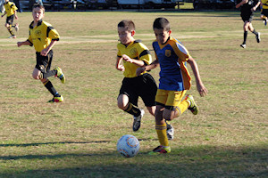
Our indefatigable eleven-ones re-discovered some of their form in a match against
Epping Eastwood at the North Ryde Oval this morning, wrapping up a four-nil win
that will go a long way to bolster the team's much-needed confidence after
succumbing to a defeat last weekend.
They hopped onto the front foot from the word go and were so determined to stamp
their authority on the game that a couple of attempts at goal sailed enthusiastically
into the upper branches of the large tree behind the goals at the Magdala Road end
of the park. But some degree of reason started to settle in once the initial
exchanges were over and the nature and threat of their opponents were realised,
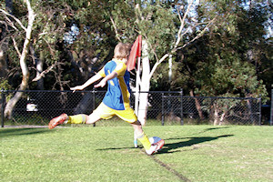
and a rebounding ball found the end of David's boot in a low volley that fizzed
into the back of the net and opened our account for the day.
We began to dominate play in the Epping Eastwood half of the field, but every now
and again a ball would sail over the heads of our defence and set off a fifty-metre
chase by both teams to claim possession of the ball. Jett's superior speed often
foiled any attempt on our goals, and a special mention goes to Jack who worked the
ball, cool as you like, from deep within the North Ryde territory to effectively
turn a deperate situation into an attacking opportunity. One such attack ended at
the feet of Lachlan on the left wing who, relishing the prospect of the few seconds
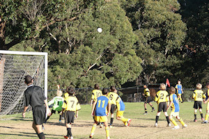
of space and time that he had at his disposal, powered a curving ball off his left
boot that flew uninterrupted along it's designated flight path before touching down
in the top-right corner of the nets, increasing the North Ryde lead by two. The
third goal come soon afterwards when Oscar P orchestrated a sizzling run past the
defence in the left midfield and timed a low pass into the centre which David was
able to charge down and slot in the bottom-left corner without breaking into a
sweat, taking the goal tally to 3 - 0 at the break.
The second half was not as successful as the first half in terms of goals scored,
but the players kept their composure and continued to hone their touch-and-go
passing game in an effort to maintain possession of the ball. Shannon, the
ultimate menace to any form of opposition, did not give the defence a moment's
rest as he dominated the play from his midfield position, and a couple of
long-range attempts at goal from Eli and Oscar P past an ever-advancing Epping
Eastwood keeper very nearly found the back of the nets. Sam, our resident tour
de force whenever a ball lands anywhere in his playing zone, was given an
opportunity when he lined up a penalty kick from thirty-five metres out. The kick
was strong and accurate, and momentarily denied entry into the goals by a cluster
of defenders, but quickly remedied by a quick-thinking Charlie who pounced on the
rebound and finished job to take the score to 4 - 0, where it remained until the
end of the game.
Well done team!
- Mark Howard
|
|
|
|
U11 Division 3
3 - 0
|
|
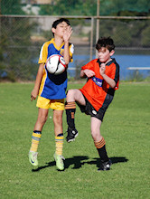
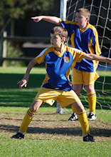
This game was a big turn around from last week. The North Ryde defence appeared
a lot more confident. Robert was very solid throughout the game. His big kicks
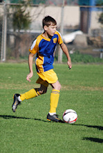
from defence turned the North Epping attackers around several times. He was
supported by a well organised defence with Benyad, Ben, Adam and Sam playing well.
Hamish seemed to cover the field. 20 minutes into the first half he was on the
spot for a through ball and booted it into the back of the net. This put energy
back into the North Ryde fuel tanks and, a minute before half-time, Hamish found
a path through the North Epping defenders and scored again.
The start of the second-half has been a danger period for the boys, but in this
game we were the danger. After beating off some strong attack with scrambling
defence, North Ryde pushed the ball to the other end and earned a corner. Robert
placed it well and there was a mad rumble in front of the goal. Hamish got his
boot to the ball and it was 3-0.
There were some stressful periods for the rest of the game, but someone always
seemed to cut the North Epping players off, or forced them into a poorly aimed
kick that went out the back. A great hat-trick for Hamish, but the whole team
deserves credit for this fine win.
- Martin Borri
|
|
|
|
U15 Division 2
2 - 0
|
|
In Joe’s absence, I felt an incredible pressure in offering to do the report for
the fourth game for a brisk Saturday 14th May 2011 and how would I be able to
maintain such a high standard? However as the game unfolded into the second half
the person who was under the greatest pressure was the goalie for Beecroft SC and
I started to relax.
The first half started as a well-paced, even game, spread across all areas of the
paddock. Our Linesman, Peter certainly earned his keep as he worked his way up and
down the line, as we enjoyed some solid and relentless defence and attack from
both teams. Ben and Nathan regularly got behind and stopped the ball with headers,
and then Chris showed his strength in defence by regularly outpacing and tackling
the opposing forwards and also by stopping a full flight ball with a header and
clearing the ball back to our forwards.
At half time the scoreboard was empty and our boys left the field to be greeted
by Paul with his half time review and motivational talk, the boys were now charged
up, knew what they had to do and did it, with the second half an even more
exciting game to watch. Then as I was lured into a false sense of calm it would
be shattered as a shot from Cameron towards the goal, it bounced off a defender,
and Luke followed through, with his shot hitting the cross bar. The ball was then
snatched safely by Beecroft’s goalie. Another run by Luke, an accurate shot at
goal, and captured by the goalie.
The first trickle of blood ran from my ears, as I was sitting near the North Ryde
mums, and they were screaming out their support. A solid run by Mitch, tackled,
and a corner by Cameron, as he continued to punish the ball, striking the ball
with a fury. (Side note to Cameron, there is no prize for kicking the ball out
of the park). More solid defence from North Ryde with Chris sailing the ball back
down to Kyle, some great ball control, another shot at goal, and the Beecroft
goalie saving it and the Beecroft defence remained solid. A high fly ball, floated
down the field, however our goalie Nat held up under the pressure and perfectly
positioned himself for the bounce and confidently captured it.
Time for Paul to refresh the field, making his subs and bringing on Tom and
Daniel. Time for another corner from Cameron, and Ben decided to take his life
into his own hands and try and head this shot (brave boy), unfortunately the
ball went out, however Ben was ok. Our boys were now just playing the averages,
and surely a goal was soon as the Beecroft team was starting to waver. The
pressure was on, a great run, with a pass to Tom with another quick run and a
well struck ball = goal. Score = 1 - 0. Then another run by Tom, a one-two with
a shot by Kyle. More pressure. Daniel’s turn, he struck the ball, a slight in
flight curve, and bang, it hit the right post. The ball was back into play, a
run and positioned by Lewis, back over the Daniel, to sink to the ball into the
net. Score = 2 - 0.
Beecroft were starting to tire and slightly overwhelmed by the relentless
pressure, whereas N.R. were getting stronger, and lifted by the Paul’s half time
pep talk and breeze of the screams from the sideline spectators. Kyle continued
to show his strength running the wing, and convincing playing the one-two move.
Hayden took a hook shot, which was deflected and he had another go, however the
Beecroft goalie continued to put his body on the line and saved the ball. Tom
decided that so many of his team mates had hit the actual goal frame that he
would have a go at it himself and belted a shot into the cross bar, just to
confuse the defence with the resonating noise from the hit and the consequential
noise from the screaming mums on the sideline.
Special thanks to Mark for being the referee in the second half, and his display
of the splits, as with cat like reflexes he threw his legs open to allow a
miss-struck ball to pass under him. The game finished with a score of 2 - 0.
A proud new tradition was started, and Tom accepted his award of 'Man of the
Cupcake', with a close follow up by Kyle also receiving a cupcake for his effort.
As Joe normally finishes up. I would like to thank all the parents who came to
support our team... you do make a loud difference! And I have been assured my
left eardrum has not been perforated and the trickle of blood will stop in a
few days, and a special thank you to Paul for your ability to get the best from
the boys and motivate them, well done!
- Matthew Howard
|
|
|
|
All Age Division 17
0 - 0
|
|
After several weeks break due to the rain and a bye, North Ryde AA17s recommenced
their 2011 season against West Ryde Rovers. Due to injury and unavailability North
Ryde started with the disadvantage of having only 10 players but despite this they
started the game strongly bossing the midfield and regularly winning possession in
the West Ryde half.
The first 30 minutes saw a few chances fall the way of North Ryde but as half time
approached it was still 0-0 with West Ryde beginning to get the better of the
exchanges - the extra man and substitutes starting to have an impact.
The second half was a more one sided affair with West Ryde beginning to show their
dominance but a resolute defence kept them at bay with most of their attacking
raids well read and diffused. At about the hour mark West Ryde created the chance
that should have won it but some great goal keeping from Ben Waldron and a lucky
deflection kept the ball out. From there it was close to a defensive drill
exercise as North Ryde repelled each attacking raid resulting in a well earned
point after the final whistle called an end to the game at 0-0.
- Simon
|
|